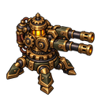
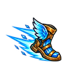
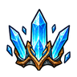
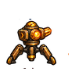
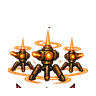
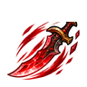
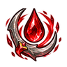
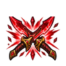

← 返回游戏从静态角色，到会行动的战场。
v0.5 · 五位英雄、五类敌人，共 50 帧移动动画。统一手绘轮廓、共享缩放与底部锚点。棋盘背景展示真实透明边缘；动画可以暂停以检查单帧。
五位英雄 · 六帧移动循环
时间枪手6 帧 · 128 × 128灰烬骑士6 帧 · 128 × 128霜环术士6 帧 · 128 × 128机巧召唤师6 帧 · 128 × 128血刃猎手6 帧 · 128 × 128 五类敌人 · 四帧移动循环
骨兵4 帧 · 128 × 128疾行魔4 帧 · 128 × 128弩手4 帧 · 128 × 128深渊守卫4 帧 · 128 × 128裂隙领主4 帧 · 192 × 192 炮台与手绘技能图标

青铜双管炮台
霜步寒霜领域
极寒冰封磁力跃迁
部署炮台
机械军团
血影突刺
汲血斩
猩红收割本次新增 38 帧。当前动画覆盖移动，攻击、受击、闪避、技能与待机呼吸仍由程序实现。游戏中的播放速度会按角色类型区分。